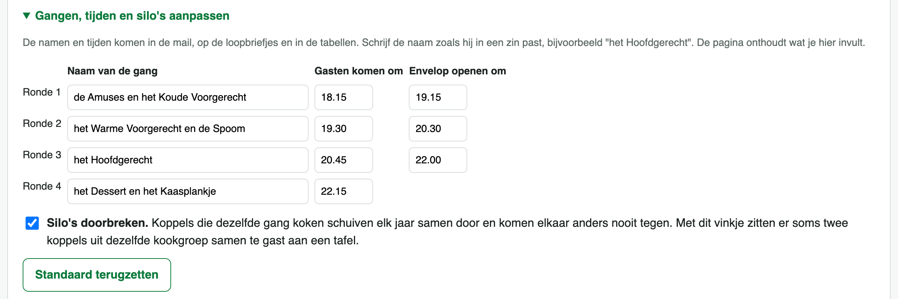
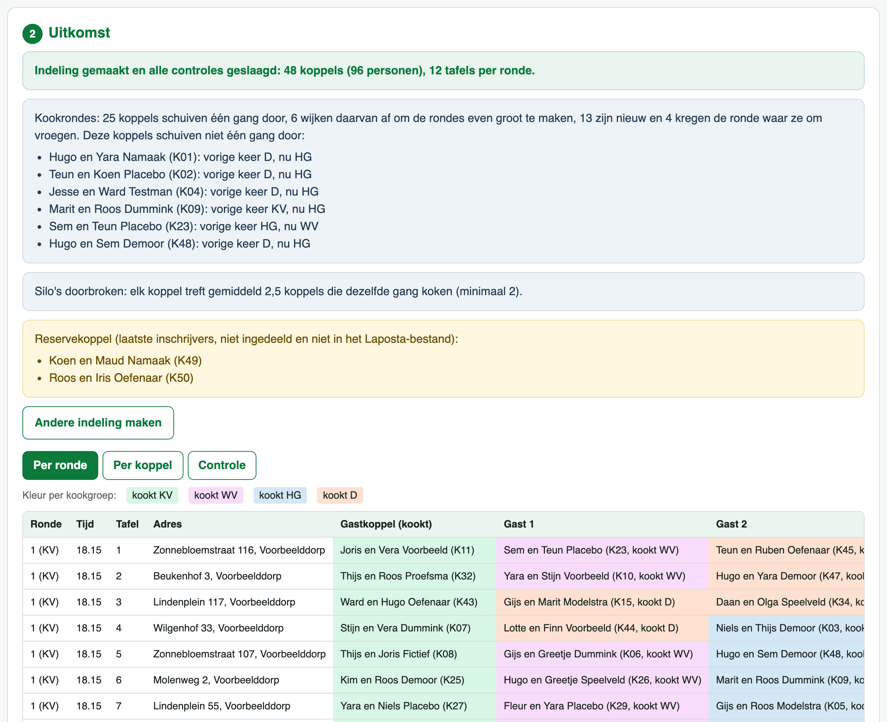
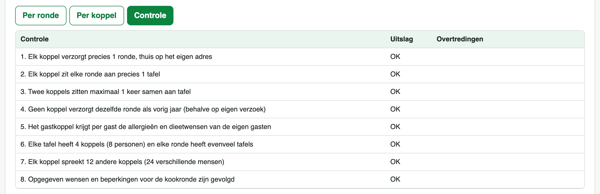
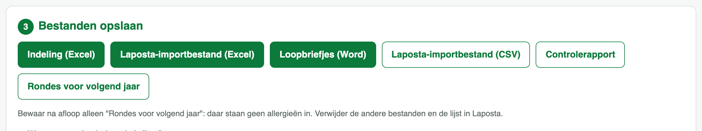
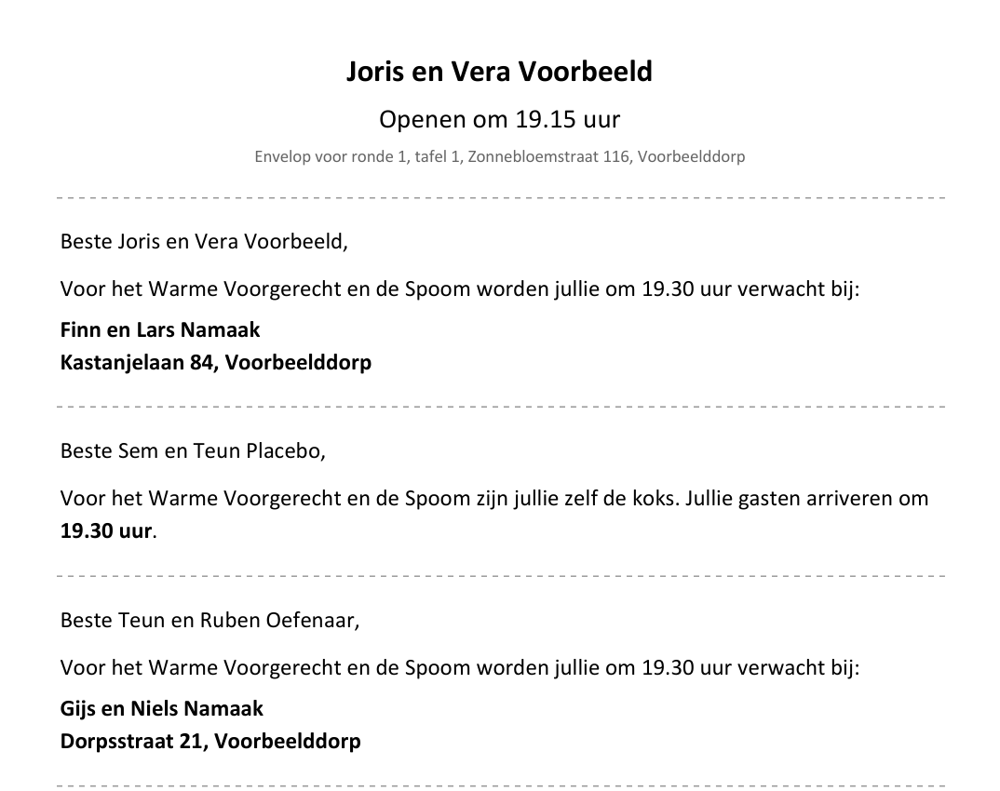

Open de tool in je browser. Klik op het groene vlak en kies het Excel-bestand, of sleep het bestand erheen. De indeling wordt direct gemaakt.

Handleiding bij de indeeltool, bijgewerkt op 26 november 2026
Met de indeeltool maak je in een paar minuten de indeling voor het Running Dinner. Je kiest de deelnemerslijst, de tool verdeelt de koppels over de rondes en de tafels, controleert de uitkomst en zet de bestanden klaar: de indeling, het bestand voor de bevestigingsmail en de loopbriefjes. De schermafbeeldingen in deze handleiding zijn gemaakt met verzonnen koppels.
Wat de tool regelt
De tool staat online op https://ralfknevel-collab.github.io/running-dinner/ en werkt in elke browser. De deelnemerslijst blijft op je eigen computer: de pagina verwerkt het bestand in de browser en stuurt niets door.
De tool leest een Excel-bestand met één koppel per regel. Gebruik voor 2027 het bestand Running Dinner 2027 (invullen) v2.xlsx. Daarin staan de koppels van 2026 al, met de ronde die ze toen kookten en de dieetwens per persoon.
ronde_vorig_jaar leeg.| id | namen | adres | tweede_mailadres | dieetwens_a | dieetwens_b | ronde_vorig_jaar | beperkingen | gekookt_dit_jaar | |
|---|---|---|---|---|---|---|---|---|---|
| 1 | Anna en Bram Voorbeeld | Molenweg 3 | anna@example.nl | bram@example.nl | allergisch voor noten | 2 | |||
| 2 | Carlijn en Daan Fictief | Parklaan 12 | carlijn@example.nl | eet geen vlees | eet geen vlees | 4 | niet ronde 3 | ||
| 3 | Eva en Finn Verzonnen | Dorpsstraat 8 | eva@example.nl | finn@example.nl | wil ronde 2 |
| Kolom | Wat erin staat |
|---|---|
id | Volgnummer van het koppel. Elk nummer komt één keer voor. Verplicht. |
namen | De namen zoals ze in de mail en op de loopbriefjes moeten staan. Verplicht. |
adres | Het adres waar het koppel kookt. Verplicht. |
email | E-mailadres van de eerste persoon, voor de bevestigingsmail. Verplicht. |
tweede_mailadres | Adres van de partner. Staat hier een adres, dan krijgen beide partners de bevestigingsmail. Elk adres mag in het hele bestand maar één keer voorkomen. |
dieetwens_adieetwens_b | De allergie of dieetwens van de eerste en van de tweede persoon, elk in de eigen kolom. Eten beide partners geen vlees, vul dat dan in beide kolommen in. Leeg als er niets is. |
ronde_vorig_jaar | De ronde die het koppel bij de vorige editie kookte: 1 is koud voorgerecht, 2 warm voorgerecht, 3 hoofdgerecht en 4 dessert. De afkortingen kv, wv, hg en d mogen ook. Leeg bij nieuwe deelnemers. |
beperkingen | Een ronde die het koppel niet kan koken, geschreven als niet ronde 3. Of een ronde waar het koppel zelf om vroeg, geschreven als wil ronde 2. Meerdere scheid je met een puntkomma. |
gekookt_dit_jaar | Vul je na afloop in. De tool gebruikt deze kolom niet. |
Let op
ronde_vorig_jaar.allergieen (één wens per koppel) werkt nog, maar de tool waarschuwt dan dat niet te zien is voor hoeveel personen de wens geldt.Open de tool in je browser. Klik op het groene vlak en kies het Excel-bestand, of sleep het bestand erheen. De indeling wordt direct gemaakt.
Onder Gangen, tijden en silo's aanpassen staan de namen van de vier gangen, de tijd waarop de gasten komen en de tijd waarop de envelop met de volgende adressen open mag. Deze namen en tijden komen in de mail, op de loopbriefjes en in de tabellen. Schrijf de naam zoals hij in een zin past, bijvoorbeeld "het Hoofdgerecht". De pagina onthoudt wat je invult.

Bovenaan staat in een groene balk of de indeling gelukt is en of alle controles geslaagd zijn. Daaronder staan twee blauwe vlakken met uitleg over de kookrondes en de silo's. Zijn er reservekoppels, dan staan die in het gele vlak.

Kookrondes: wie kookt wat
Elk koppel krijgt de gang die volgt op de gang van de vorige editie: wie het koude voorgerecht maakte, maakt nu het warme voorgerecht, en wie het dessert maakte begint weer bij het koude voorgerecht. Elke ronde heeft evenveel koks nodig. Komt dat niet uit, bijvoorbeeld door afmeldingen, dan verplaatst de tool zo weinig mogelijk koppels naar een andere gang. Het blauwe vlak noemt die koppels bij naam. Nieuwe deelnemers krijgen niet het hoofdgerecht. Wil je zelf bepalen wat een koppel kookt, zet dan wil ronde 2 in de kolom beperkingen en kies de lijst opnieuw.
Silo's doorbreken
Koppels die dezelfde gang koken schuiven elk jaar samen een gang door. Zit aan elke tafel precies één koppel van elke gang, dan komen zij elkaar nooit tegen. De tool zet daarom aan een deel van de tafels twee gastkoppels die dezelfde gang koken. In de tabel zie je dat aan twee vakjes met dezelfde kleur op één regel. Het blauwe vlak meldt hoeveel koppels uit de eigen groep elk koppel treft. Onder de 28 koppels lukt dit niet of maar beperkt. Je zet het uit met het vinkje bij de namen en tijden.
De uitkomst heeft drie tabbladen. Per ronde toont alle tafels. Per koppel toont voor elk koppel wat het vorige keer kookte, wat het nu kookt en bij wie het de andere rondes aanschuift. Controle toont de uitslag van elke voorwaarde.


Bevalt de indeling niet, bijvoorbeeld omdat buren bij elkaar aan tafel zitten, klik dan op Andere indeling maken. De tool maakt een nieuwe indeling die aan dezelfde voorwaarden voldoet. Dat kun je zo vaak herhalen als je wilt. Sla een indeling die je wilt houden wel eerst op, want met elke klik vervangt de nieuwe indeling de vorige.

| Knop | Wat je krijgt |
|---|---|
| Indeling (Excel) | De volledige indeling per ronde en per koppel, met de controle en de reservekoppels. |
| Laposta-importbestand | Eén regel per e-mailadres met de namen, de ronde, de gang, de tijd waarop de gasten komen en de dieetwensen van de eigen gasten. Gebruik de Excel-versie. De gasten staan er zonder naam in. |
| Loopbriefjes (Word) | De briefjes met het adres voor de volgende gang, klaar om af te drukken en te knippen. Zie hoofdstuk 5. |
| Controlerapport | De uitslag van alle controles als tekstbestand, met de uitleg over kookrondes en silo's. |
| Rondes voor volgend jaar | Per koppel de ronde die het kookt, zonder allergieën. |
De knop Loopbriefjes (Word) geeft één Word-bestand. Je kunt het in Word nog aanpassen, bijvoorbeeld om een plaatje toe te voegen of een adres toe te lichten.
Druk het bestand pas af als de indeling vaststaat. Maak je daarna toch een andere indeling, sla dan ook de loopbriefjes en het Laposta-bestand opnieuw op: de drie bestanden horen bij elkaar.

Laposta stuurt elk koppel dezelfde mail, met op een paar plekken de eigen gegevens. Die gegevens komen uit het Laposta-importbestand. Daarin staat één regel per e-mailadres. Een koppel met twee adressen staat er dus twee keer in, met dezelfde gegevens.
| Kolom | Voorbeeld |
|---|---|
email | anna@example.nl |
namen | Anna en Bram Voorbeeld |
ronde | ronde 2 |
gerecht | het Warme Voorgerecht en de Spoom |
tijd_gasten | 19.30 |
dieetwensen_gasten | • allergisch voor noten • eet geen vlees • eet geen vlees Elk bolletje hoort bij één gast. Heeft geen van de gasten een wens, dan staat er "geen dieetwensen opgegeven". |
namen, ronde, gerecht, tijd_gasten en dieetwensen_gasten. Kies als veldtype Tekst. "In formulier" en "Verplicht" laat je uit.{{namen}}. Die code staat op de pagina Velden. Kijk daar hoe de code van elk veld precies heet.De lijst en de velden maak je één keer aan. Gebruik daarna elk jaar dezelfde lijst.
laposta_import.xlsx.laposta_import.xlsx.email onder het veld E-mailadres, de kolom namen onder het veld namen, en zo verder voor alle zes.Let op
Voorbeeld van de tekst
Beste {{namen}},
Jullie zijn ingedeeld voor {{gerecht}}. Jullie gasten arriveren om {{tijd_gasten}} uur.
Er schuiven drie stellen bij jullie aan, zodat je in totaal met acht eters bent. De volgende dieetwensen hebben jullie gasten bij ons aangegeven (elk bolletje hoort bij één deelnemer):
{{dieetwensen_gasten}}
Willen jullie hier rekening mee houden bij het samenstellen van de gang?
[Alinea over de start van de avond en de enveloppen]
Succes met de voorbereidingen!
Een testmail naar een willekeurig adres laat de codes leeg of letterlijk zien. Alleen een adres dat in de lijst staat en als testadres is aangemerkt, krijgt de eigen gegevens te zien.
Wil je dat alleen de koks van één ronde een bepaalde alinea zien, gebruik dan Conditionele inhoud. Klik op het tekstblok, klik op het pictogram Conditionele inhoud en maak een regel: het veld ronde "is gelijk aan" ronde 1. Het blok staat dan alleen in de mail van de koks van ronde 1. Op dezelfde manier kun je de zin over dieetwensen alleen tonen als het veld dieetwensen_gasten "niet gelijk is aan" geen dieetwensen opgegeven. Dit werkt ook in het gratis account.
Verstuur je vanaf een gratis adres zoals Gmail, dan vervangt Laposta het afzendadres door een adres van Laposta zelf. Zulke mail belandt sneller in de spam. Met een eigen domeinnaam voorkom je dat.
De namen van de knoppen en menu's in dit hoofdstuk komen uit de hulppagina's van Laposta (docs.laposta.org), geraadpleegd in november 2026. Ze kunnen op het scherm iets anders heten.
Klopt er iets niet aan het bestand, dan maakt de tool geen indeling en zie je in een rood vlak wat er mis is. Pas het bestand aan in Excel, sla het op en kies het opnieuw.

| Melding | Oplossing |
|---|---|
| Verplichte kolommen ontbreken | De kopregel is aangepast of het verkeerde tabblad staat vooraan. Zet de kolomnamen terug zoals in het invulbestand. |
| Adres of e-mailadres ontbreekt | Vul de lege cel in op de genoemde regel. |
| E-mailadres komt meerdere keren voor | Elk adres mag maar één keer in het bestand staan, ook in de kolom tweede_mailadres. Laposta bewaart per adres maar één regel. |
| Ronde vorig jaar is geen ronde 1 t/m 4 | Vul een cijfer van 1 tot en met 4 in, of laat de cel leeg. |
| Twee verschillende gewenste rondes | In de kolom beperkingen staat bij één koppel twee keer "wil ronde". Laat er één staan. |
| De kookrondes zijn niet te verdelen | Te veel koppels kunnen of willen alleen dezelfde ronde koken. Haal een wens of beperking weg. |
| Te weinig koppels | Onder de 16 koppels is de indeling niet te maken. |
Vul in de deelnemerslijst de kolom gekookt_dit_jaar in met de ronde die elk koppel kookte. Die staat in het bestand "Rondes voor volgend jaar" en op het tabblad Per koppel van de indeling. Bij de volgende editie kopieer je de lijst en zet je die waarden in de kolom ronde_vorig_jaar. Zo weet de tool wie wat gekookt heeft.
Bewaar verder zo weinig mogelijk. De indeling, het Laposta-bestand en de lijst in Laposta bevatten allergieën en dieetwensen. Verwijder die na het diner.